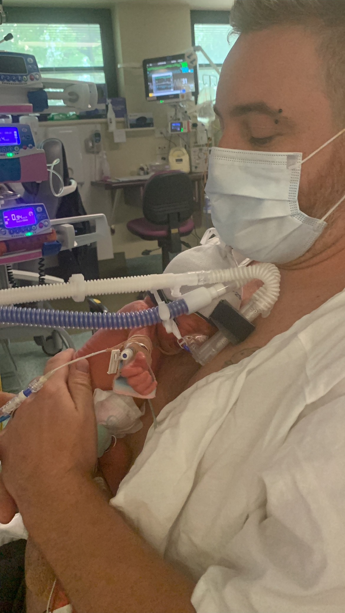

JJ's Fingerprint
The personal thread through 25 papers
When I watched my son being resuscitated — multiple times — within hours of birth, it was surreal.
His O₂ levels were dropping on the screen. The mask that should have reversed the numbers wasn't.
84% … 82% … 80% … 78% …
A nurse, seeing my face, said: "It's OK — we're doing everything that needs to be done."
I asked about the number on the screen. I was given a target of 65%. Unnerving. Because watching everyone around me, they looked helpless. I didn't know at the time, but those numbers fell right through a gap in the research that these people were trained on.
They had a plan for when it hit 65%, and hope it didn't in the meantime. That was obvious from the alarms, the pagers, and the bodies flooding the space around JJ.
What nobody in that room knew was that I was connecting with my son. Not the declining number on a monitor — something underneath it. Something I couldn't name yet. The number kept falling, and the people around me kept looking sideways at each other, and I felt something change.
Not in him. In me.

That feeling became twenty-five papers.
The Chain
The same number that sets the size of every atom also sets the oxygen concentration your baby's brain needs in the first breath after birth.
My wife had preeclampsia. She was in intensive care three floors down, fighting for her own life. My son's oxygen dropped in the hours after delivery. Nobody could tell me why one membrane — the one that was supposed to protect him — failed while the rest of his body fought to hold.
So I went looking.
The algebra starts at α⁻¹ = 137.035999177 — twelve significant figures, no fitted parameters, tested round-trip to 5,000 decimal places. It matches the most precise measurement in physics to 0.3σ.
Then it keeps going.
Six links. σ(water) ≈ 0. σ(ions) = 1.0. One dimensionless constant to biology's most fundamental filter.
When that coefficient holds, it's called breathing.
When it fails at the placental boundary, it's called preeclampsia.
When it reaches the fetal brain through matched blood with no counter-regulation, it's what happened to JJ.
The full chain — twenty-five papers, every link falsifiable — is in one fingerprint.
Paper J — the fixed point paper — fitting.
Run the script. Check the algebra. Then tell me 137 is just a constant.
— Jay